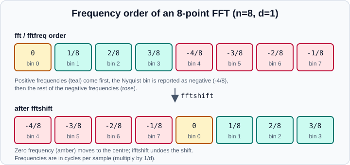

Discrete Fourier Transforms
|
This content was generated with the assistance of AI and should be verified against the official documentation before being relied on in production. |
This page targets NumPy 2.5 (2.5.4 at the time of writing), and every example was run with NumPy 2.5.4 in October 2026. Examples target Python 3.13 or 3.14 and were run on Python 3.13. It covers the numpy.fft module: the transforms, how to label the frequency axis, how scaling works, and the pitfalls that make spectra look wrong. For where Fourier methods sit in a data-science workflow (smoothing, seasonality, feature extraction from signals) see Exploratory Data Analysis; the array operations used throughout are explained in Broadcasting and Reductions & Axis Semantics.
What the discrete Fourier transform computes
A signal of n samples is decomposed into n complex coefficients. Coefficient k measures how much of the signal oscillates k times over the whole window; its magnitude is the strength of that frequency and its angle is the phase. numpy.fft computes the transform with a fast algorithm (the FFT) whose cost grows roughly as n log n, whatever the length, although lengths with only small prime factors are fastest.
The function families are:
| Functions | Use |
|---|---|
|
One-dimensional transform of complex or real input along one axis |
|
Two-dimensional and N-dimensional transforms ( |
|
Real input: only the non-negative frequencies are computed and returned |
|
Signals that are Hermitian symmetric in the time domain (real spectrum) |
|
The frequency of each output bin |
|
Reorder the output so zero frequency is in the centre, and undo it |
A first spectrum
Build a signal with a 5 Hz and a 12 Hz component, sampled at 100 Hz for 2 seconds, and find its frequencies.
import numpy as np
fs = 100 # sampling rate in Hz
t = np.arange(0, 2, 1 / fs) # 200 samples
x = np.sin(2 * np.pi * 5 * t) + 0.5 * np.sin(2 * np.pi * 12 * t)
X = np.fft.fft(x)
freqs = np.fft.fftfreq(x.size, d=1 / fs) # d is the sample spacing in seconds
print(X.dtype, X.shape)
print(freqs[:5], freqs[-3:])
amplitude = np.abs(X) / x.size * 2 # single-sided amplitude for real input
half = x.size // 2
top = np.argsort(amplitude[:half])[::-1][:2]
print(freqs[top], amplitude[top].round(3))Output:
complex128 (200,) [0. 0.5 1. 1.5 2. ] [-1.5 -1. -0.5] [ 5. 12.] [1. 0.5]
The spectrum has peaks at 5 Hz and 12 Hz with the amplitudes 1.0 and 0.5 that were put in. The d argument of fftfreq is the time between samples, so the frequencies come out in cycles per unit of time (Hz here); with the default d=1.0 they are cycles per sample, between -0.5 and 0.5.
Source: numpy.fft.fft
Frequency ordering
The output of fft is not sorted by frequency. Zero frequency comes first, then the positive frequencies, then the negative ones in order of increasing (less negative) frequency, as fftfreq shows:

-
Element 0 is the zero-frequency term, the sum of the signal. For real input it is real.
-
For an even length
n, elementn/2is the Nyquist frequency, shared by the positive and negative sides;fftfreqreports it as negative. -
For an odd length the largest positive and negative frequencies occupy the two middle elements, and there is no Nyquist bin.
import numpy as np
print(np.fft.fftfreq(8))
print(np.fft.rfftfreq(8))
print(np.fft.fftshift(np.fft.fftfreq(8)))
print(np.fft.fftfreq(7))
print(np.fft.fftfreq(8, d=0.5)) # spacing 0.5 s
# fftshift and ifftshift are inverses; they differ for odd lengths
print(np.fft.fftshift(np.arange(5)), np.fft.ifftshift(np.arange(5)))
print(np.fft.ifftshift(np.fft.fftshift(np.arange(8))))fftshift and ifftshift act on all axes by default, which is what an image needs, but not what you want for a stack of signals: pass axes=-1 to shift only the frequency axis.
Source: numpy.fft.fftshift
Real input: rfft and irfft
A real signal has a Hermitian spectrum: the negative-frequency half is the complex conjugate of the positive half, so it carries no new information. rfft returns only the n // 2 + 1 non-negative frequencies, which halves the work and memory, and rfftfreq labels them.
import numpy as np
fs = 100
t = np.arange(0, 2, 1 / fs)
x = np.sin(2 * np.pi * 5 * t) + 0.5 * np.sin(2 * np.pi * 12 * t)
Xr = np.fft.rfft(x)
fr = np.fft.rfftfreq(x.size, d=1 / fs)
print(Xr.shape, fr[:3], fr[-1]) # 101 bins up to the Nyquist frequency 50 Hz
print(np.allclose(np.fft.irfft(Xr, n=x.size), x))
print(np.allclose(np.fft.ifft(np.fft.fft(x)).real, x))
# An odd-length signal needs n, because irfft cannot tell odd from even
y = np.fft.rfft(np.ones(5))
print(np.fft.irfft(y).shape, np.fft.irfft(y, n=5).shape)Output:
(101,) [0. 0.5 1. ] 50.0 True True (4,) (5,)
Always pass the original length n to irfft: n // 2 + 1 input points are ambiguous between an even and an odd output length, and the default assumes even. ifft returns a complex array even when the imaginary part is only rounding noise; take .real (or use irfft) when you know the result is real.
Source: numpy.fft.rfft
Normalisation: the norm argument
All the transforms take norm:
norm |
Forward transform | Inverse transform |
|---|---|---|
|
unscaled |
scaled by 1/n |
|
scaled by 1/sqrt(n) |
scaled by 1/sqrt(n) |
|
scaled by 1/n |
unscaled |
import numpy as np
a = np.arange(4.0)
for norm in ("backward", "ortho", "forward"):
print(norm, np.fft.fft(a, norm=norm).round(3))
# Parseval's theorem: energy is preserved up to the scaling
fs = 100
t = np.arange(0, 2, 1 / fs)
x = np.sin(2 * np.pi * 5 * t) + 0.5 * np.sin(2 * np.pi * 12 * t)
print(np.sum(x**2))
print(np.sum(np.abs(np.fft.fft(x)) ** 2) / x.size) # default norm
print(np.sum(np.abs(np.fft.fft(x, norm="ortho")) ** 2)) # unitaryOutput:
backward [ 6.+0.j -2.+2.j -2.+0.j -2.-2.j] ortho [ 3.+0.j -1.+1.j -1.+0.j -1.-1.j] forward [ 1.5+0.j -0.5+0.5j -0.5+0.j -0.5-0.5j] 125.0 124.99999999999999 125.0
Use "ortho" when you want the transform to preserve energy so that magnitudes are comparable across lengths, and "forward" when you want the zero-frequency coefficient to equal the mean of the signal. The forward and inverse norm must match: transforming with "ortho" and inverting with the default does not recover the signal.
Length, zero padding and the axis argument
n (for fft and rfft) crops or zero-pads the input along the transform axis; the multidimensional functions take the same idea as s, a shape, and axes chooses the axes.
import numpy as np
print(np.fft.fft([1, 2, 3], n=5).shape) # zero-padded to 5 points
print(np.fft.fft(np.arange(8), n=4)) # cropped to the first 4 points
m = np.arange(12.0).reshape(3, 4)
print(np.fft.fft(m, axis=0).shape) # transform each column
print(np.fft.fft2(np.ones((4, 6)), s=(8, 8)).shape)
print(np.fft.fftn(np.ones((2, 3, 4)), axes=(0, 2)).shape)Zero padding interpolates the spectrum, giving a smoother plot and a finer frequency grid, but it adds no new information: two close frequencies that were not separable before padding stay unseparated. The frequency resolution is set by the observation time (1 / (n * d)), not by the padded length. Padding to a length with small prime factors can still make the transform faster, and scipy.fft.next_fast_len suggests such lengths.
An input of length zero raises ValueError: Invalid number of FFT data points (0) specified.
Source: numpy.fft.fft2
Windowing and spectral leakage
The transform assumes the window repeats forever. A frequency that does not fit a whole number of periods into the window is cut abruptly at the edges, and its energy leaks into neighbouring bins. Multiplying by a taper such as np.hanning reduces the leakage at the price of a wider main peak.
import numpy as np
t = np.arange(0, 1, 1 / 64)
y = np.sin(2 * np.pi * 5.5 * t) # 5.5 cycles: does not fit the window
print(np.abs(np.fft.rfft(y))[:9].round(1))
print(np.abs(np.fft.rfft(y * np.hanning(64)))[:9].round(1))Output:
[ 3.6 3.7 4.2 5.2 7.8 21.3 19.6 6.1 3.4] [ 0.1 0.1 0.1 0.4 2.9 13.4 13.4 2.9 0.4]
Without the window the energy spreads across every bin; with the Hann window the far-away bins fall close to zero. NumPy also provides hamming, blackman, bartlett and kaiser windows, and scipy.signal.get_window offers more.
Source: numpy.hanning
Phase
np.angle of a coefficient gives the phase in radians, relative to a cosine starting at the first sample.
import numpy as np
t = np.arange(0, 1, 1 / 64)
signal = np.cos(2 * np.pi * 3 * t + np.pi / 4)
print(np.angle(np.fft.rfft(signal))[3].round(4), round(np.pi / 4, 4))Source: numpy.fft.rfft and numpy.angle
The output is 0.7854 for both values.
Convolution through the FFT
The product of two spectra is the spectrum of their circular convolution. To get an ordinary (linear) convolution, pad both inputs to at least len(a) + len(b) - 1 points first. For long signals this beats the direct np.convolve.
import numpy as np
a = np.array([1, 2, 3, 0])
b = np.array([0, 1, 0.5, 0])
n = len(a) + len(b) - 1
c = np.fft.irfft(np.fft.rfft(a, n) * np.fft.rfft(b, n), n)
print(c.round(6))
print(np.convolve(a, b))Output:
[-0. 1. 2.5 4. 1.5 0. 0. ] [0. 1. 2.5 4. 1.5 0. 0. ]
The -0. is a harmless rounding artefact. Without the padding the result wraps around circularly.
Source: numpy.convolve
Two and more dimensions
fft2 transforms the last two axes and fftn any set of axes. The zero-frequency coefficient equals the sum of the array, and fftshift moves it to the centre for display.
import numpy as np
img = np.zeros((8, 8))
img[2:4, 2:6] = 1
F = np.fft.fft2(img)
print(F.shape, np.fft.rfft2(img).shape) # (8, 8) and (8, 5)
print(np.allclose(np.fft.ifft2(F).real, img))
print(abs(np.fft.fftshift(F))[4, 4], img.sum()) # both 8.0
# Hermitian signals: hfft and ihfft
print(np.fft.hfft(np.fft.ihfft(np.array([1.0, 2, 3, 4])), 4))Output:
(8, 8) (8, 5) True 8.0 8.0 [1. 2. 3. 4.]
rfft2 and rfftn halve only the last transformed axis, so their output has shape (8, 5) for an (8, 8) input.
Source: numpy.fft.fftn
Precision and dtypes in NumPy 2
NumPy 2.0 changed numpy.fft to compute natively in single and long-double precision instead of always promoting to double precision, and added an out argument. Observed on NumPy 2.5.4:
import numpy as np
print(np.fft.fft(np.ones(8, dtype=np.float32)).dtype)
print(np.fft.rfft(np.ones(8, dtype=np.float32)).dtype)
print(np.fft.fft(np.ones(8, dtype=np.longdouble)).dtype)
print(np.fft.fft(np.ones(8, dtype=np.int8)).dtype)
out = np.empty(8, dtype=complex)
print(np.fft.fft(np.arange(8.0), out=out)[:2])Output:
complex64 complex64 complex128 complex128 [28.+0.j -4.+9.65685425j]
float32 input now gives complex64, integers are converted to float64, and longdouble input gives a long-double complex result (the same size as complex128 on some platforms such as Apple silicon, which is why the third line prints complex128 here). The reference page routines.fft.html still states that numpy.fft promotes float32 and complex64 to double precision; that sentence is out of date and the release notes of NumPy 2.0 are the authority. If the memory of large single-precision arrays matters, float32 input now keeps complex64 output, and the results are correspondingly less precise (about 7 significant digits).
Source: NumPy 2.0.0 release notes
numpy.fft versus scipy.fft
numpy.fft offers the basic routines. The SciPy documentation describes scipy.fft as the more comprehensive superset, and it adds features that numpy.fft does not have:
-
workersfor multithreaded transforms, andoverwrite_xto reuse the input buffer; -
discrete cosine and sine transforms (
dct,dst) and the fast Hankel transform; -
next_fast_lenandprev_fast_lento choose efficient lengths, andset_workers/set_backendfor global configuration.
Both modules compute the same numbers for the common functions:
import numpy as np
import scipy.fft as sfft
fs = 100
t = np.arange(0, 2, 1 / fs)
x = np.sin(2 * np.pi * 5 * t) + 0.5 * np.sin(2 * np.pi * 12 * t)
print(np.allclose(sfft.fft(x), np.fft.fft(x)))
print(sfft.next_fast_len(1001)) # 1008: only small prime factors
print(sfft.fft(x, workers=2).shape)numpy.fft functions have no workers argument; passing workers= to them raises TypeError. Use scipy.fft for large, repeated or multithreaded transforms, and for spectral estimation (scipy.signal.welch, spectrogram) see the SciPy documentation.
Pitfalls
-
Forgetting the sample spacing:
fftfreq(n)withoutdgives cycles per sample, not Hz. -
Reading the raw output as sorted. Plot against
fftshifted frequencies, or userfftfor real data. -
Plotting
abs(X)without scaling: magnitudes grow withnunder the default norm. Divide byn, and double the non-zero, non-Nyquist bins of a one-sided spectrum, to read amplitudes. -
A tone between bins looks smeared (leakage); use a window or choose a window length that is a whole number of periods.
-
Expecting padding to improve resolution; it only interpolates.
-
irfftwithoutnfor odd lengths returns one sample too few. -
Aliasing: frequencies above the Nyquist frequency
fs / 2cannot be told apart from lower ones. Filter before sampling; no FFT can undo it afterwards. -
Comparing exact complex values across platforms: the tiny imaginary parts and
-0.differ. Usenp.allclose.